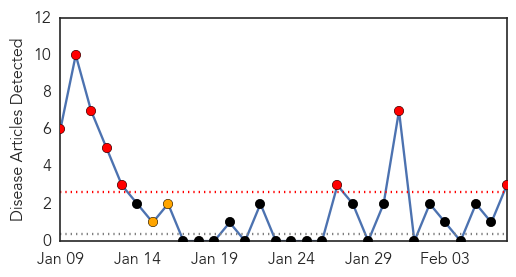
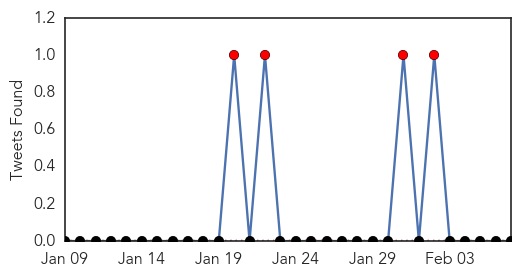
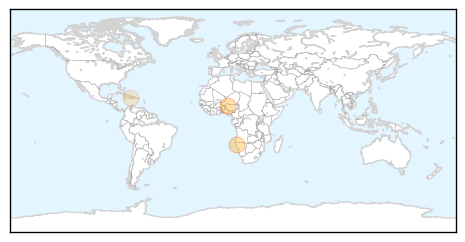
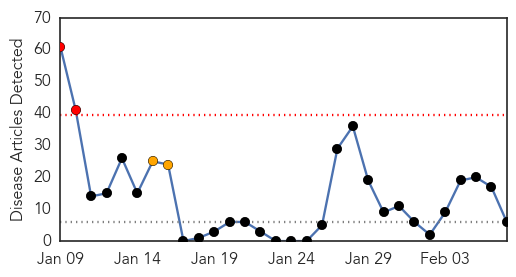
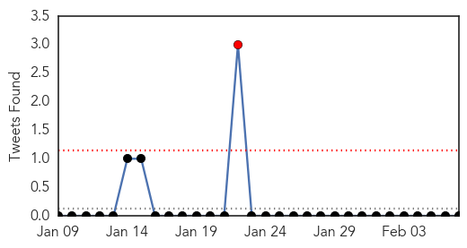
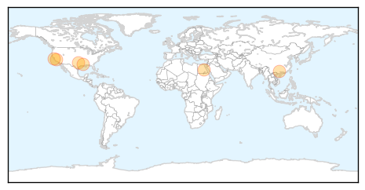

Cholera
30-Day Web Trend
8 alerts, 2 warnings

30-Day Twitter Trend
4 alerts, 0 warnings

Article Locations
Article Confidences

Top Articles:
Top Tweets:
-
No tweets found for Feb 07, 2014
Influenza
30-Day Web Trend
2 alerts, 2 warnings

30-Day Twitter Trend
1 alerts, 0 warnings

Article Locations
Article Confidences
Top Articles:
- 0.997
- Bay Area flu virus sleuths race to ward off worst
- 0.991
- China Reports Ten Additional Cases Of Bird Flu
- 0.986
- Avian Flu Variant Stalks Egypt
- 0.980
- California: 202 died from influenza so far this flu season
- 0.963
- FOX 8 WVUE New Orleans News, Weather, Sports, Social
- 0.947
- County marks seventh flu-related death
Top Tweets:
-
No tweets found for Feb 07, 2014